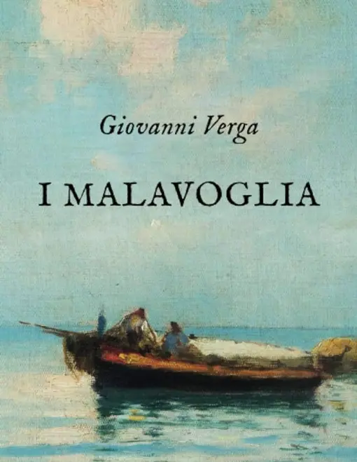
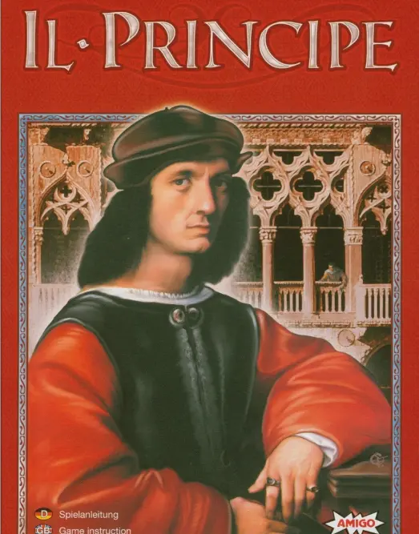

Classico
Questa sezione è dedicata a opere letterarie di duratura importanza, essendo esemplari all'interno della loro tradizione culturale.
Aproveite!
-

Malavoglia
I Malavoglia è il titolo del romanzo più conosciuto dello scrittore siciliano Giovanni Verga, pubblicato
Ascolta qui!
a Milano dall'editore Treves nel 1881. -

Il Principe
Il Principe è un trattato storico-politico di Niccolò Machiavelli composto nel corso del 1513 durante il soggiorno forzato all'Albergaccio.
Ascolta qui!